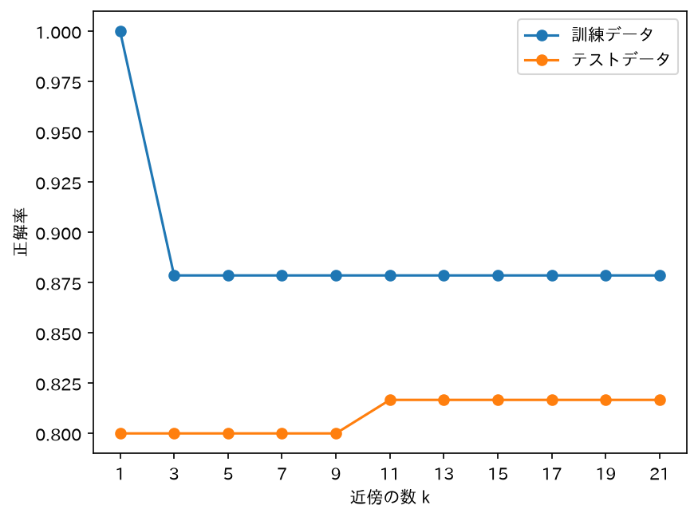
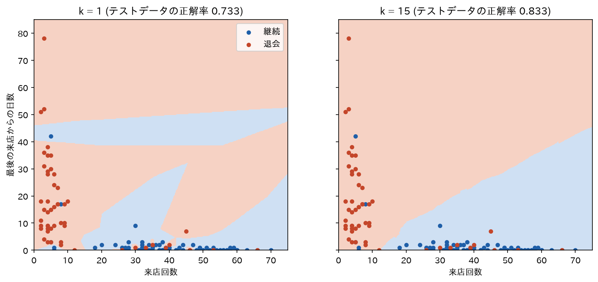

k 近傍法
k 近傍法 (k-NN, k-Nearest Neighbor) は, 予測したい会員に説明変数の値が近い会員を訓練データから k 人選び, その k 人の多数決でクラスを決める手法です. 退会の確率は, k 人のうち退会した人の割合になります. 学習の段階では訓練データを覚えておくだけで, 計算は予測のときに行います. SVM と同じく距離を使うので, 説明変数を標準化してから使います.
k を 1 から 21 まで変えて, 訓練データとテストデータでの正解率を比べます.
from sklearn.neighbors import KNeighborsClassifier
ks = range(1, 22, 2) # k = 1, 3, 5, ..., 21
train_acc, test_acc = [], []
for k in ks:
knn = make_pipeline(StandardScaler(), KNeighborsClassifier(n_neighbors=k))
knn.fit(X_train, y_train)
train_acc.append(knn.score(X_train, y_train))
test_acc.append(knn.score(X_test, y_test))
fig, ax = plt.subplots()
ax.plot(ks, train_acc, marker='o', label='訓練データ')
ax.plot(ks, test_acc, marker='o', label='テストデータ')
ax.set_xlabel('近傍の数 k')
ax.set_ylabel('正解率')
ax.set_xticks(list(ks))
ax.legend()
plt.show()
plt.close(fig)
k = 1 では訓練データの正解率が 1.000 になります. 訓練データの会員にとって最も近い会員は自分自身なので, 必ず正解するためです. 一方でテストデータの正解率は 0.800 にとどまります. k を 11 以上にすると, 訓練データの正解率は 0.879 に下がり, テストデータの正解率は 0.817 に上がります. k が小さいほど訓練データの 1 人ずつに合わせた予測になり, 訓練データとテストデータで説明した過学習が起きます. k = 15 のときの AUC は 0.849 です.
標準化が要ることも確かめます. 標準化せずに k = 15 で学習すると, テストデータの正解率は 0.767 で, 標準化したとき (0.817) より下がります. 標準化しないと, 値の幅が大きい来店回数や 1 回あたりの購入額が距離の大半を占め, 購入額の割合の違いがほとんど距離に表れないためです.
knn_raw = KNeighborsClassifier(n_neighbors=15) # 標準化しない
knn_raw.fit(X_train, y_train)
print(knn_raw.score(X_test, y_test))
"""
0.7666666666666667
"""過学習の様子は, 説明変数を来店回数と最後の来店からの日数の 2 つに絞ると図で見られます. 次の図は, k = 1 と k = 15 のそれぞれについて, 平面上の各点で k 近傍法が予測するクラスを色で塗り, 訓練データの会員を点で重ねたものです.
import numpy as np
cols = ['visits', 'days_since_last']
# 図を塗るための格子点 (来店回数 0〜75 回, 日数 0〜85 日)
gx, gy = np.meshgrid(np.linspace(0, 75, 300), np.linspace(0, 85, 300))
grid = pd.DataFrame({'visits': gx.ravel(), 'days_since_last': gy.ravel()})
fig, axes = plt.subplots(1, 2, figsize=(12, 5), sharey=True)
for ax, k in zip(axes, [1, 15]):
model = make_pipeline(StandardScaler(), KNeighborsClassifier(n_neighbors=k))
model.fit(X_train[cols], y_train)
pred = model.predict(grid).reshape(gx.shape)
ax.contourf(gx, gy, pred, levels=[-0.5, 0.5, 1.5], colors=['#cfe0f3', '#f6d2c4'])
for v, color, label in [(0, '#1f5fa8', '継続'), (1, '#c4462a', '退会')]:
d = X_train[y_train == v]
ax.scatter(d['visits'], d['days_since_last'], s=18, color=color, label=label)
acc = model.score(X_test[cols], y_test)
ax.set_title(f'k = {k} (テストデータの正解率 {acc:.3f})')
ax.set_xlabel('来店回数')
axes[0].set_ylabel('最後の来店からの日数')
axes[0].legend()
plt.show()
plt.close(fig)
青の領域は継続, 赤の領域は退会と予測される範囲です. k = 1 では, 来店回数が多いのに退会した数人の会員のまわりにも赤の領域ができ, 境界が入り組んでいます. 訓練データの 1 人ずつに合わせた境界なので, テストデータの正解率は 0.733 にとどまります. k = 15 では境界がなめらかになり, 「来店回数が少ないか, しばらく来店していない会員は退会する」という, 決定木の分岐と同じ傾向が表れます. テストデータの正解率も 0.833 に上がります.